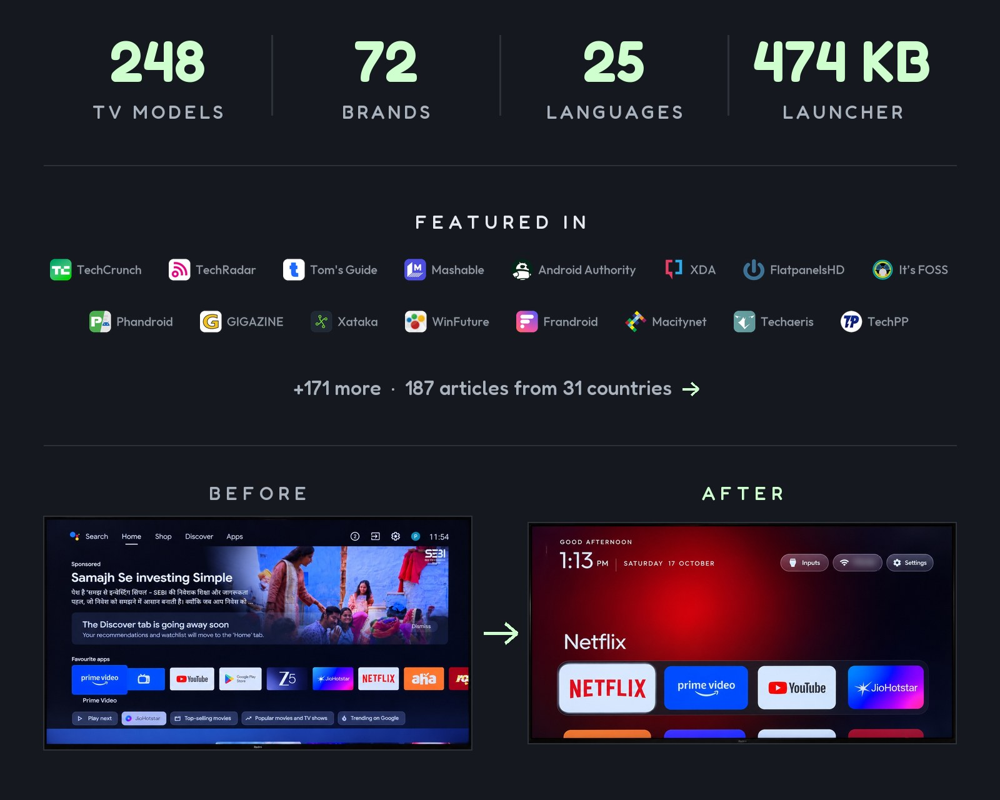

CleanYourTV
A free app that strips the ads and bloat off your Android smart TV and gives it a clean home screen.
Run one command over Wi-Fi and your TV loses the sponsored rows, telemetry and pre-loaded apps you never asked for - replaced by a 474 KB launcher styled like Apple TV.

How does it work?
Your smart TV's home screen is full of ads, sponsored rows and apps you never asked for.
You give a coding assistant (like Claude Code) the project's prompt file and your TV's model name.
Your TV's IP address on Wi-Fi and Developer Options turned on (a one-time toggle in Settings).
It connects to your TV over the network and runs a cleanup script.
- Disables ad services, telemetry and bloatware apps one by one (nothing is deleted - a restore script can bring each one back)
- Installs a 474 KB launcher as the new home screen - a dock of your apps, a clock, and nothing else
- Audits voice assistant, automatic content recognition and tracking components
A TV that boots to a clean home screen with no ads.
- A clean launcherA dock with your streaming apps (Netflix, YouTube, Prime Video), a clock screensaver, and no sponsored rows
- A list of what was disabledThe script names each app it turned off, like 'com.google.android.tvrecommendations' (the 'For You' row)
- A backupA snapshot of your TV's app state before changes, so you can undo any step
What changes for me?
Without it
- Your TV boots to a home screen full of sponsored rows and ads for shows you'll never watch
- Telemetry services run in the background, slowing down a TV with 1 GB of RAM
- Preloaded apps you can't uninstall take up space and clutter the app list
With it
- A clean dock with only the apps you choose, styled like Apple TV
- Background ad and tracking services are off - the TV runs faster
- Every change is reversible: a restore script re-enables anything you miss
How hard is it to try?
Effort
- Turn on Developer Options: in your Android TV Settings, find About, then tap Build Number 7 times. Enable USB Debugging (or Network/ADB Debugging) in the new Developer Options menu.
- Download the project or clone it, then give
PROMPT.mdto Claude Code with your TV model name - Accept the USB debugging prompt on your TV and follow the assistant's checklist - the cleanup takes about 5 minutes
What it takes on your computer
- Space on disk
- The launcher APK is about 474 KB. The cleanup tools (Python scripts) are under 5 MB.
- Memory while it runs
- The launcher itself needs very little memory - designed for TVs with 1 GB of RAM.
- Runs on
- Android TV or Google TV (Android 8.0 / API 26 or newer). Fire TV gets only the debloat, not the launcher. Samsung (Tizen) and LG (webOS) are not supported.
Paste this into Claude Code. It runs your safety scan first, then a 10-minute test.
/skillspector https://github.com/Gathin23/cleanyourtv Then: Read PROMPT.md and follow its steps for my TV (I'll tell you the model and IP).
Should I?
Great if you...
- Anyone tired of ads on their Android TV home screen
- Households with older TVs slowed down by bloatware
- People who want a simple, Apple TV-style launcher
Skip it if...
- You have a Samsung or LG TV (not supported)
- You rely on Google TV's content recommendations
- You're not comfortable turning on Developer Options
Instead, you could look at
- FLauncherA simpler open-source launcher without the debloating tools
- Projectivy LauncherA customizable launcher available on the Play Store, no sideloading needed
Is it safe?
- Security advisories: 0GitHub's advisory list, checked Oct 23
- Searches for CVEs, vulnerabilities, malware and scams0 results read, including the national CVE database: nothing found
- Are the stars earned?26.3K stars, 362 contributors, 1.9K commits. findarepo: looks organic (100/100)
Watch out for
- ADB debugging opens a network port. Enabling ADB debugging on your TV opens port 5555, which anyone on your Wi-Fi could connect to. The project recommends turning it off after setup.
- No formal releases yet. The project has 1,932 commits but no tagged releases or version numbers. You install from the main branch.
- Beware lookalike domains. The official site is cleanyour.tv - the project warns that other domains using the name are not run by them.
- Only 6 days old. 26.3K stars and 200+ contributors in under a week is remarkable, but the project is still very new.
Who's using it, and for what?
CleanYourTV is 6 days old. The creator's own use is documented, and TechCrunch reports 'a few thousand people' tried it in two days, but detailed before-and-after reviews are still thin.
Gathin T. (creator)
Built the project to clean up ads on his parents' Xiaomi TV - Claude Code disabled 25 packages and wrote the launcher.
A clean home screen with only the family's streaming apps, no ads or sponsored rows.
TechCrunch: People are using AI to make their smart TVs dumb again, Oct 19
Who's talking about it
- TechCrunchPeople are using AI to make their smart TVs dumb again
- TechRadarYour TV should do what you paid for - people are vibe-coding apps to banish ads
- Shelly PalmerMaking Smart TVs Dumb Again
- TrendshiftCleanYourTV trending daily and monthly
- findarepoStar growth looks organic (100/100)
Sources
- CleanYourTV GitHub, Oct 23
- CleanYourTV website, Oct 23
- TechCrunch coverage (Sarah Perez), Oct 19
- TechRadar coverage, Oct 23
- Shelly Palmer coverage, Oct 23
- findarepo listing, Oct 23
- Trendshift listing, Oct 23